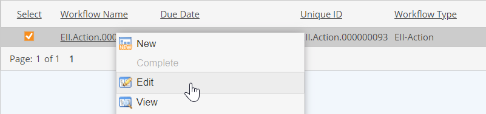
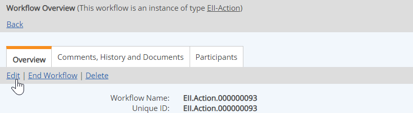
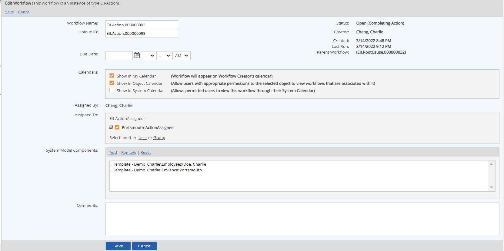

You can edit the setup of an open workflow to:
You must have the appropriate permissions for each function to edit the workflow. Permissions are granted through any workflow role you are a member of, unless you have Manage Workflows right.
You can edit a workflow in any of the following ways:


The Edit option is not available if the workflow is closed.
The properties you have permission to edit will be available in edit form. Those you cannot edit are view only.
